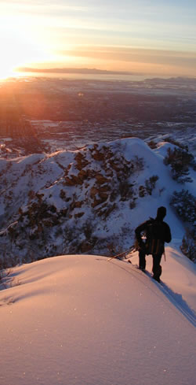

|  |
Freakin' where no man has freaked before...
In December 2001, Guy Smithson
came out of deep, 5 year coma that resulted from a tragic nail-gun
accident. He came
back to this world with a burning mission: to ski in some of the
most overlooked places right outside of cosmopolitan Salt Lake
City. Fearless of shrubbery and vast expanses of snowlessness, "the
freak" was reborn that winter, bushwacking up, down, and across
the foothills.
That winter, while others stayed home, complaining
about the lack of snow in the wasatch, the freak found an unprecedented
stash of powder at lower elevations. Also know as crud, mush, ice,
sustrugi, confetti, dirt and asphalt, the freak found all these
wonderful snow conditions within minutes from his job as a deep
fat fryer technician near Trolley Square.
Unfortunately, the past few
years have not been so good for "freakin'". Low elevation
snow totals have been non-existant, and global warming threatens
the very future of this
new sport: Extreme-ly Low Elevation Skiing. But until the big dumps
come low, you may still follow the freak's adventures as he rigorously
trains in the upper, middle, and lowest wasatch.
Great things are underway here at foothillfreak.com.
Once it's all finished it will be easy to waste countless hours
on this site, so bookmark now, and come back often!
|